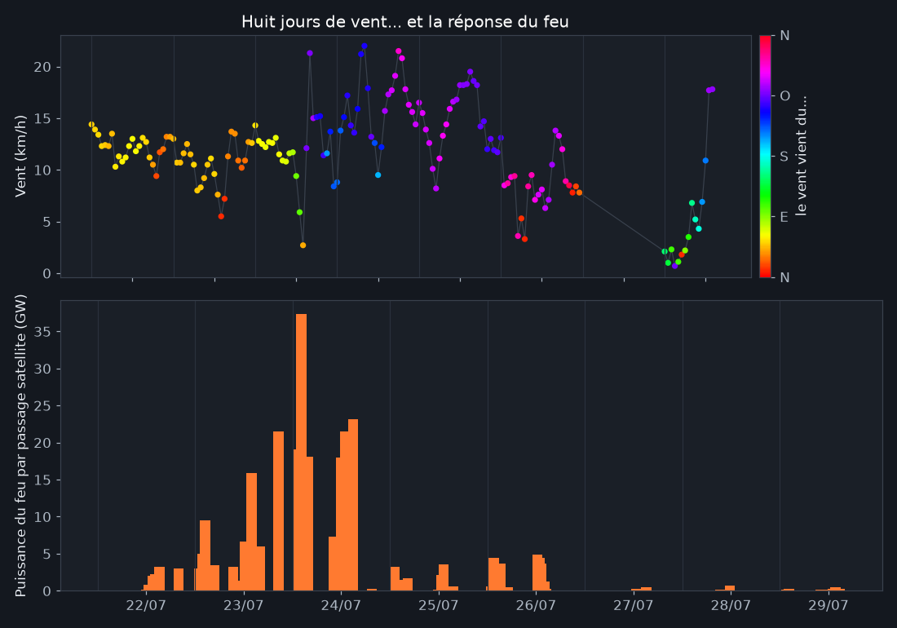
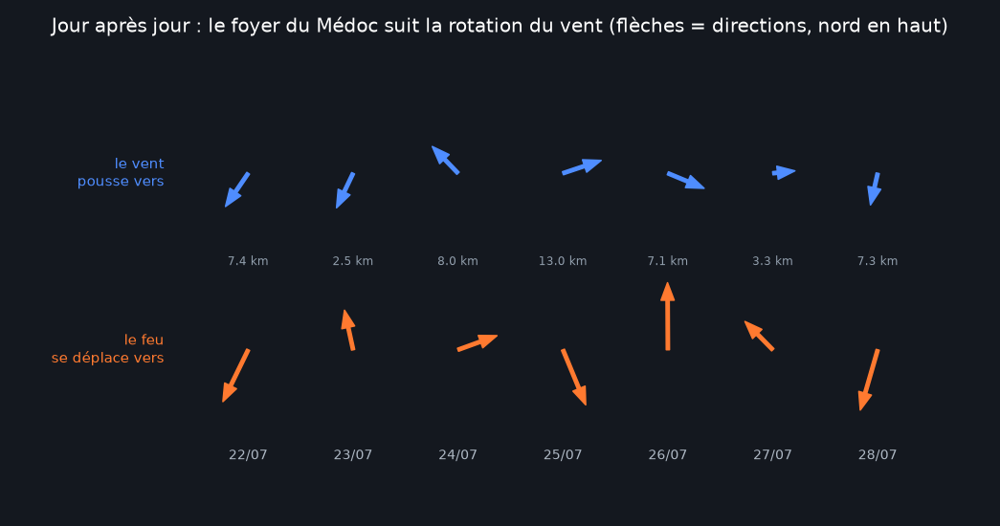
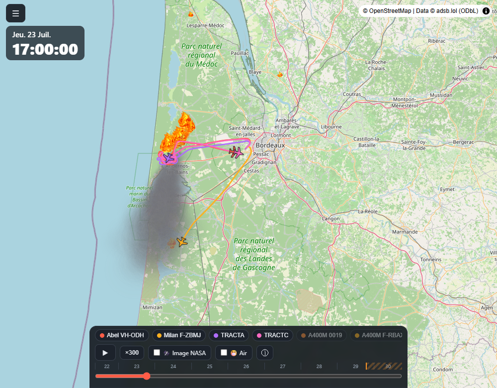
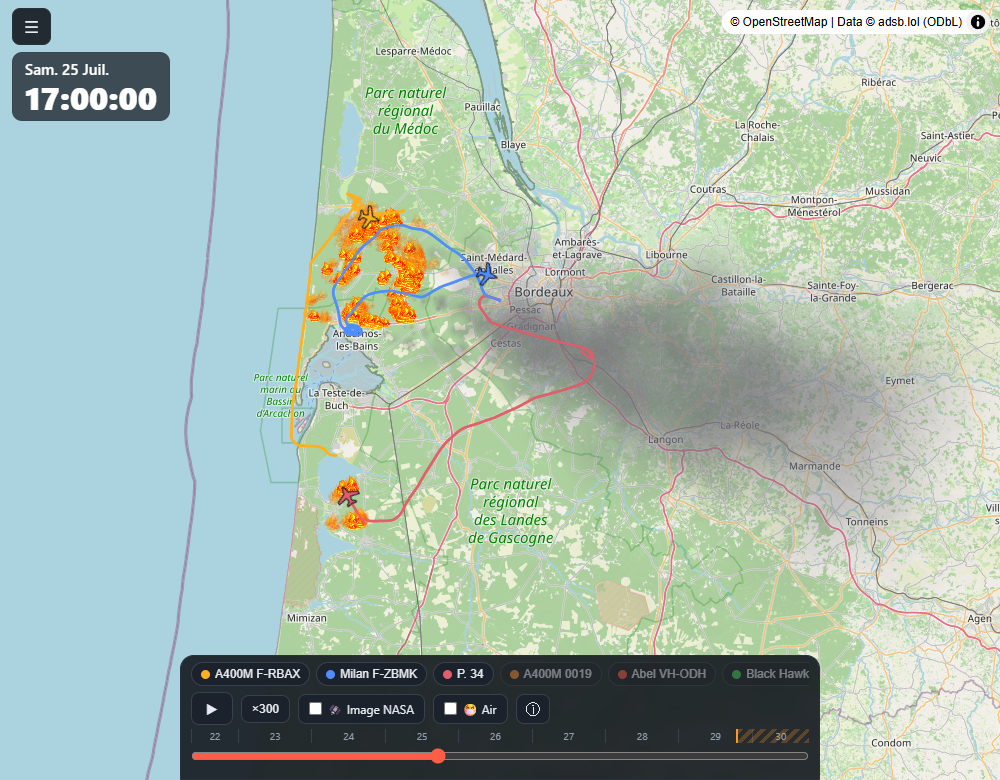
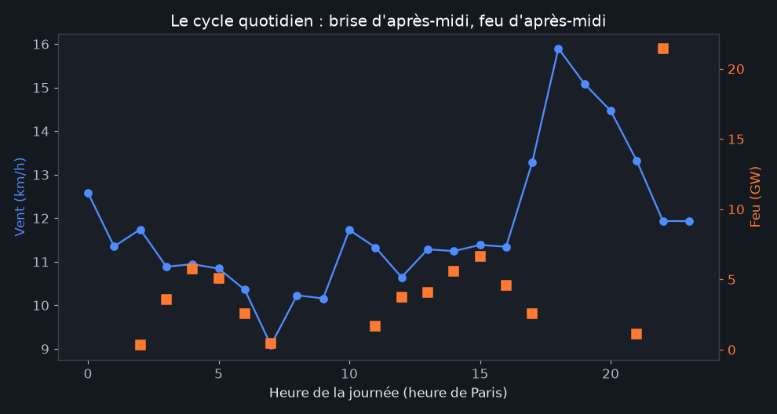

Le feu et le vent : la mécanique de la catastrophe
Publié le 31 juillet 2026
On dit d'un grand incendie qu'il "fait sa propre météo". Mais avant cela, c'est la météo qui fait l'incendie : sa vitesse, sa direction, ses trêves. En superposant les relevés de vent heure par heure aux 9 400 détections satellites du feu, une histoire se dessine : ce n'est pas un incendie qu'a connu la Gironde, c'est trois : dictés par trois régimes de vent successifs.
Huit jours en un graphique

Le feu naît à Saumos et court vers le sud-ouest, à travers la forêt du Porge. Dramatique pour la forêt, "favorable" pour les habitants : il s'éloigne des zones denses. C'est l'acte qui brûlera le plus d'hectares.
Le 24, le vent tourne au sud-est puis bascule plein ouest, en forcissant (pointes à 22 km/h). Le front dormant à l'est du brasier devient la ligne de menace : Salaunes, Saint-Médard, la métropole. C'est le pic d'intensité du feu : et le moment du "mur de largages" décrit dans l'analyse du front, et des évacuations massives.
Vent tombé à 5-9 km/h de moyenne. Privé de son moteur, le feu passe de dizaines de gigawatts à moins de deux. C'est dans cette accalmie que le confinement devient possible.
Le feu suit le vent : la preuve par les flèches

Les jours de grand déplacement, l'accord est frappant : le 22, vent et feu filent ensemble vers le sud-ouest (7,4 km) ; les 24-25, la bascule à l'ouest du vent et la course du feu vers l'est (8 à 13 km) coïncident. Le feu n'invente rien : il va où on le pousse.
Deux après-midis, deux mondes


Le métronome des après-midis

Chaque jour rejoue la même partition : nuit calme, montée de la brise en fin de matinée, maximum de vent et de feu l'après-midi. C'est ce cycle qui structure aussi le rythme des largages observé dans l'analyse des norias : on frappe le plus fort quand le feu est le plus fort.
Méthode et limites
Vent : réanalyse et observations Open-Meteo au point central de la zone (44.6 N, 1.0 O), à 10 m du sol, heure par heure : tronqué au dernier relevé observé (pas de prévision dans cette analyse). Feu : puissance radiative sommée par passage satellite (VIIRS + MODIS) : entre deux passages, l'intensité réelle n'est pas observée. Un grand feu convectif génère en outre son propre vent local (les rafales erratiques décrites par les pompiers) : notre vent "ambiant" ne le capture pas, il explique le cadre, pas chaque saute d'humeur du brasier. Le déplacement du barycentre est pondéré par l'intensité : il mélange propagation réelle et extinctions.
Reproduire : scripts/analyse_vent.py du
dépôt ·
chiffres bruts. Sources : © adsb.lol contributors (ODbL),
NASA FIRMS, Open-Meteo (CC BY 4.0). Analyse produite avec l'aide de Claude Code.
- 31/07/2026 : première publication.